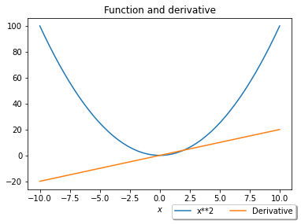

Welcome to limathpy’s documentation!¶
This is a module of students of LiMA for students of LiMA of the Autonomous University of the state of Hidalgo
Submodules¶
ODE¶
Here we deal with differential equations
- limathpy.ODE.first_ode(vector)¶
- A function that returns the general solution of a first order differential equation of the form p(t)y’(t) + q(t)y(t) = g(t);
p, q and g are functions which depend on t.
- Args:
vector (list): a list of the form [p(t), q(t), g(t)].
- Returns:
Eq: the general solution of the equation, C1 is a constant which depends on some initial condition.
- Example:
>>> from limathpy import first_ode >>> first_ode([t, 2, 2 + t]) Eq(y(t), C1/t**2 + t/3 + 1)
- limathpy.ODE.lin_system(matrix, init_cond=[[1, 1], [0, 1]])¶
A function that, given an ordinary differential equations system, returns the linear system for some given initial conditions. Args:
- matrix (list of two lists): a list of two lists of the form [[t1, t2], [t3, t3]],
where you obtain the following system x’(t) = t1*x(t) + t2*y(t); y’(t) = t3*x(t) + t4*y(t).
init_cond (list of two lists): a matrix of the form [[t1, t2], [x(t1), y(t2)]], for some t1, t2. Defaults to x(t1 = 1) = 0 and x(t2 = 1) = 1.
- Returns:
tuple: a tuple of the form (Eq_1, Eq_2), with Eq_1 and Eq_2 equations (Eq) with C1 and C2 as variables that are to be found using the initial conditions.
Example: >>> from limathpy import lin_system >>> lin_system([[1, 1], [0, -3]], [[0, 0], [0, 1]]) (Eq(-C1/4 + C2, 0), Eq(C1, 1))
- limathpy.ODE.phase_portrait(matrix, lim_init_cond=2)¶
A function that, given a 2x2 matrix (list of two lists), returns the phase_portrait of the associated ordinary differential equations system for some given initial conditions between 0 and the given limit initial condition. Args:
- matrix (list of two lists): a list of two lists of the form [[t1, t2], [t3, t3]],
where you obtain the following system x’(t) = t1*x(t) + t2*y(t); y’(t) = t3*x(t) + t4*y(t).
lim_init_cond (int): a number that will be the limit for the initial confitions.
Example: >>> from limathpy import phase_portrait >>> phase_portrait([[0, 1], [-1, 0]], 4) .. image:: phase_portrait.png
- align
center
- limathpy.ODE.second_ode_const(vector)¶
- A function that returns the solution of a second order differential equation of the form r(t)y’’(t) + p(t)y’(t) + q(t)y(t) = g(t);
r, p, q and g are functions which depend on t.
- Args:
vector (list): a list of the form [r(t), p(t), q(t), g(t)].
- Returns:
Eq: the general solution of the equation, C1 and C2 are constants which depend on some initial conditions.
- Example:
>>> from limathpy import second_ode_const >>> second_ode_const([t**2, 2*t, 0, 1]) Eq(y(t), C1 + C2/t + log(t))
- limathpy.ODE.solve_2nd_ode(vector, init_cond=[[1, 2], [0, 1]])¶
- A function that returns the solution of a second order differential equation of the form r(t)y’’(t) + p(t)y’(t) + q(t)y(t) = g(t)
for some given initial conditions; r, p, q and g are functions which depend on t.
- Args:
vector (list): a list of the form [r(t), p(t), q(t), g(t)]. init_cond (list of two lists): a matrix of the form [[t1, t2], [y(t1), y(t2)]], for some t1, t2. Defaults to y(t1 = 1) = 0 and y(t2 = 2) = 1.
- Returns:
Eq: the general solution of the equation, C1 and C2 are constants which depend on some initial conditions.
- Example:
>>> from limathpy import solve_2nd_ode >>> solve_2nd_ode([t**2, 2*t, 0, 1], [[1, 0], [2, 0]]) Eq(y(t), log(t) - 2*log(2) + 2*log(2)/t)
- limathpy.ODE.solve_first_ode(vector, init_cond=[1, 0])¶
- A function that returns the solution of a first order differential equation of the form p(t)y’(t) + q(t)y(t) = g(t)
for some given initial conditions; p, q and g are functions which depend on t.
- Args:
vector (list): a list of the form [p(t), q(t), g(t)]. init_cond (list): a list of the form [t1, y(t1)], for some t1. Defaults to y(t1 = 1) = 0.
- Returns:
Eq: the solution of the equation depending on the initial condition.
- Example:
>>> from limathpy import solve_first_ode >>> solve_first_ode([t, 2, 2 + t], [1, 1]) Eq(y(t), t/3 + 1 - 4/(3*t**2))
- limathpy.ODE.solve_system_ode(matrix, init_cond=[[1, 1], [0, 1]])¶
A function that, given a 2x2 matrix (list of two lists), returns the sotutions of the associated ordinary differential equations system for some given initial conditions. Args:
- matrix (list of two lists): a list of two lists of the form [[t1, t2], [t3, t3]],
where you obtain the following system x’(t) = t1*x(t) + t2*y(t); y’(t) = t3*x(t) + t4*y(t).
init_cond (list of two lists): a matrix of the form [[t1, t2], [y(t1), y(t2)]], for some t1, t2. Defaults to y(t1 = 1) = 0 and y(t2 = 2) = 1.
- Returns:
tuple: a tuple of the form (x(t), y(t)), with x(t) and y(t) the general solutions of the system. C1 and C2 are constants that depend on some initial conditions.
Example: >>> from limathpy import solve_system_ode >>> solve_system_ode([[1, -1], [0, 1]], [[0, 1], [1, 1]]) (-t*exp(-1)*exp(t) + exp(t), exp(-1)*exp(t))
- limathpy.ODE.system_ode(matrix)¶
A function that, given a 2x2 matrix (list of two lists), returns the general sotutions of the associated ordinary differential equations system. Args:
- matrix (list of two lists): a list of two lists of the form [[t1, t2], [t3, t3]],
where you obtain the following system x’(t) = t1*x(t) + t2*y(t); y’(t) = t3*x(t) + t4*y(t).
- Returns:
tuple: a tuple of the form (x(t), y(t)), with x(t) and y(t) the general solutions of the system. C1 and C2 are constants that depend on some initial conditions.
Example: >>> from limathpy import system_ode >>> system_ode([[1, 0], [0, -3]]) (C1*exp(t), C2*exp(-3*t))
- class limathpy.ODE.x(*args)¶
- class limathpy.ODE.y(*args)¶
Calculus¶
Here there are functions to solve calculus problems
- limathpy.Calculus.graph_fyd(expression)¶
Function that graphs an expression given as a string and its derivative on the same plane.
This function produces images such as:
- Args:
expression (str): Expression of a function.
- Example:
>>> import matplotlib.pyplot as plt >>> graph_fyd("x**2")
- limathpy.Calculus.n_derivatives(expr, n=1)¶
Function that returns a list with the n derivates of an expression, with n given.
- Args:
expr: Any sympy function n (int, optional): The number of derivatives required. Defaults to one.
- Returns:
list: the funtion and the indicated derivatives.
- Example:
>>> from sympy import symbols >>> x = symbols('x') >>> n_derivatives(x**4, 4) [x**4, 4*x**3, 12*x**2, 24*x, 24]
- limathpy.Calculus.root_f(expression, number=0)¶
Function that returns if an expression evaluated to a given number n, is zero.
- Args:
expression (str): Expression of a function. number (optional): The real number at which the function is evaluated. Defaults to zero.
- Returns:
bool: True if the given number is the root of the function, False otherwise.
- Example:
>>> root_f("x**2", 0) True
- limathpy.Calculus.tangent_line(expression, x_0)¶
Function that gives the equation of a tangent line to a function about a given point.
- Args:
expression (str): Expression of a function. x_0: Value of the x coordinate for the point of tangency of the line.
- Returns:
A sympy equation of the tangent line to the function through the given point.
- Example:
>>> from sympy import diff, symbols, Eq, sympify >>> tangent_line("x**2", 1) Eq(y, 2*x - 1)
LinearAlgebra¶
Here there are functions to solve linear algebra problems
- limathpy.LinearAlgebra.change_basis(base1, base2)¶
Change of basis matrix, a matrix that translates vector representations from one basis, such as the standard coordinate system, to another basis.
- Args:
base1 (matriz): Sympy matrix as a representation of a base base2 (matriz): Sympy matrix as a representation of a base.
- Returns:
matrix: Change of basis matrix from base1 to base2
- Example:
>>> # If we want the base change matrix from B1={(3,1),(2,-1)} to B2={(2,4),(-5,3)} >>> # we use the matrix representations of each base as in this example >>> import sympy as sp >>> B1=sp.Matrix([[3,2],[1,-1]]) >>> B2=sp.Matrix([[2,-5],[4,3]]) >>> B1, B2, change_basis(B1,B2) (Matrix([ [3, 2], [1, -1]]), Matrix([ [2, -5], [4, 3]]), Matrix([ [ 7/13, 1/26], [-5/13, -5/13]]))
- limathpy.LinearAlgebra.graph_solution(expr1, expr2)¶
Graphical Solution to a 2 x 2 System of Equations.
- Args:
expr1 (expression): equation expressed in terms of \(x\) expr2 (expression): equation expressed in terms of \(x\).
- Example:
>>> import sympy as sp >>> import numpy as np >>> import matplotlib.pyplot as plt >>> expr1 = x - 2 >>> expr2 = 2*x +3 >>> graph_solution(expr1,expr2) .. image:: graph_solution.png :align: center
- limathpy.LinearAlgebra.inner_product(vector1, vector2)¶
Inner product.
- Args:
vector1 (matrix): Sympy matrix 2x1 vector1 (matrix): Sympy matrix 2x1.
- Returns:
(float): usual inner product in \(\mathbb{R}^n\)
- Example:
>>> import sympy as sp >>> v1=sp.Matrix([0,1]) >>> v2=sp.Matrix([1,2]) >>> inner_product(v1,v2) 2.0
- limathpy.LinearAlgebra.int_eigenvalues(matriz)¶
Examine if the eigenvalues are integers
- Args:
matriz (matrix) = square sympy Matrix.
- Returns:
string: ‘The matrix has all its integer eigenvalues’ or ‘The matrix has not all its integer eigenvalues.’
- Examples:
>>> import sympy as sp >>> int_eigenvalues(sp.Matrix([[1,2],[1,3]])) The Matrix([[1, 2], [1, 3]]) has not all its integer eigenvalues
- limathpy.LinearAlgebra.int_eigvals_n(n)¶
Values of n for which [[1,n],[1,1]] has integer eigenvalues.
- Args:
n (int): the element (1,2) of the matrix.
- Returns:
list: A list with the values between 0 and n for which [[1,n],[1,1]] has positive eigenvalues.
- Examples:
>>> import sympy as sp >>> int_eigvals_n(100) [0, 1, 4, 9, 16, 25, 36, 49, 64, 81, 100]
- limathpy.LinearAlgebra.integers_list(lista)¶
Integers in a list.
- Args:
lista (list): any list
- Returns:
string: ‘True’ if all values in the given list are integers or ‘False’ in other case.
- Examples:
>>> integers_list([1,3,0.5]) False
- limathpy.LinearAlgebra.matrix_n(matriz, n)¶
Powers of a matrix.
- Args:
matriz: matrix of sympy n (int): the power.
- Returns:
list: List of n powers of a given matrix.
- Examples:
>>> import sympy as sp >>> matrix_n(sp.Matrix([[1,2],[3,4]]),2) [Matrix([ [1, 2], [3, 4]]), Matrix([ [ 7, 10], [15, 22]])]
MathematicalModels¶
Here there are functions to solve mathematical models problems
- members